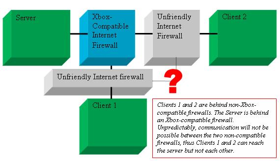

By Jason Strayer, Support Engineer, Xbox Advanced Technology Group
Matchmaking encompasses everything involved in getting players together into an Xbox Live session of a game. In theory, this seems easy to implement. Almost all of the tricky protocol code is accomplished inside the Xbox Live APIs and by the Xbox Live service itself. Hosts just need to advertise their games on the Xbox Live Matchmaking server, clients then query the server, get a list of available games, and either let the user choose one or, in the case of OptiMatch, choose one automatically. Then, the user pushes some buttons and suddenly they're in the game, playing Xbox Live against someone from across the continent.
Unfortunately, it's just not that easy. After much experience with the first wave of Xbox Live titles, we've determined that there are a number of subtle points in how the APIs are used and how the UI is constructed that greatly affect whether the matchmaking UI in a title is friendly or...downright rude. In the worst-case scenario, a player might attempt to join three or more matches, each timing out after half a minute, before finally getting into a match that skips and jumps and lags and hiccups all over the place, leading the user to believe that this title just doesn't work well over the Internet. In a slightly better scenario, the user might be warned that they're getting into a bad session, but that only seems to rub salt in the wound, not soften the blow.
The following white paper is a list of best practices every Xbox Live title should implement to provide the best Matchmaking experience to its users. Since Matchmaking is the primary point of entry for most users into the Xbox Live portion of a title, good implementation in this area will affect the perception of the entire title.
MatchSim, the Matchmaking Simulator tool, is the first place to start in developing Matchmaking functionality for your title. This tool is mainly a one-stop shopping experience that allows you to design a schema, create queries, and test those queries against result sets. When you're ready to integrate your session attribute design against your code, MatchSim will even generate basic C or C++ code that can be immediately applied to title code to get simple API support in the title. How could one simple tool do so much? You must be asking yourself how much such a tool would cost? But wait, there's more! MatchSim also encapsulates a subset of the code from the real Matchmaking service and functions as a simple PC-side simulator for matchmaking, invaluable in the early stages of development.
The following instructions outline the basic process for using MatchSim; please refer to the documentation for more detailed explanation of the various features.
Start by converting the match session schema you've probably already detailed on paper (or the back of a napkin, a menu, or possibly your hand) directly into attributes in the Attribute panel. Use the Constants panel to express parameters or values that you might have otherwise encoded as a string for readability. Together, the attributes and constants comprise the matchmaking "schema" for your title, the sum total of everything that can possibly be advertised about your game sessions.
For example, if you're designing a race-based game, your session schema might comprise the number of laps, the current track name, the current session name, the minimum skill level required for the race, and a set of flags (the programming kind, not the racing kind) to describe various on/off options the player might want to selectively search for in an complex query. These translate into the following attributes:
Once you have a schema, you can start designing queries that search the list of available sessions to match for results. You'll need at least an OptiMatch query and a QuickMatch query, unless you intend to create one all-purpose query that serves both modes. Query design and the Matchmaking modes are covered in the following sections of the white paper, below.
To continue our example, a simple QuickMatch query for this schema would aim players at sessions that have a skill level near the current player's and that are running shorter races. Introducing some of the recommendations you'll read about later in the paper, the query would look like this:
After you've designed your queries, visit the Sessions page and add some sessions with varied values to fit the schema you've designed. The fake sessions you create here can be exported and imported to an XML-formatted file that you can reuse while doing early refinement of the schema and queries. On your first usage, return to the Queries pane and switch to the Query Tester. On the Query Tester tab, input various expected inputs into the parameters by clicking on the parameters in the list view and entering new values. Run the tester and verify that the query works as expected. You can save your current set of schema and queries out to an XML "XMS file" that contains the data necessary to replicate these on the main Xbox Live servers.
Work through this procedure over a handful of iterations until you're comfortable with the design and functionality. When ready, choose the appropriate Export Code option from the Match menu and generate a C or C++ file to integrate code into your game. The SDK help topic for "matchmaking classes" has a full run-down on the classes and functions provided. Go back to your source code editor and start connecting all the pieces to your own functions/classes that operate the UI.
If you're using C++, make sure to call the Process method for the CSession or CQueryNameQuery classes from your game loop approximately once per frame when one of these is in use to handle any task pumping that the class needs to do. In particular, Process needs to be called within 1–2 normal frames' time (20–30 ms) after CSession::Create or CQueryNameQuery::Query is initially called to open a connection to the service. Failure to do so will result in a timeout of the connection and an unexpected Winsock error from the underlying Online API. This can be tricky if there is lengthy game-specific code at either point, so additional calls may need to be sprinkled along the startup path to promote good behavior and eliminate cavities.
It is highly recommended that you use the classes generated by MatchSim. These classes automatically implement many of the suggestions proposed in this white paper. Using these classes is a great way to save two days or more of development effort in making your own Matchmaking code compliant with these suggestions.
With all pieces connected properly, the next step is to test the code against MatchSim. Use the Connect Xbox command on the Tools menu in MatchSim to redirect a particular Xbox to the MatchSim server. This command places a special entry in an .ini file on the chosen Xbox Development Kit that informs the XOnline API code to redirect all Matchmaking calls to the specified IP address. This allows the MatchSim server to intercept those calls and spoof the real Matchmaking service. Note that matchmaking redirection only works when linking to the non-secure version of the XONLINE libraries, XONLINE(D).LIB. Use of the non-secure version of XONLINE does not mean that all communication from your game will suddenly be unencrypted; the non-secure version merely allows for connection to insecure devices, so in practice there will be very little difference in the performance of your game when using this library.
You should test extensively against MatchSim. MatchSim allows you to view the current hosted sessions and export them to a file. This file can be further modified, adding and changing entries, to provide a more complete list of fake sessions to be returned in search queries. This is particularly useful in developing the Matchmaking UI for searches, as described in the following sections. Because the entire Matchmaking design process is integrated into a single tool, it is very easy to make quick changes to your schema and queries as Xbox Live development proceeds and additional features are added to the code base.
Appropriately enough, the Disconnect Xbox option will remove the redirect line from the .ini file and allow the Xbox to start talking to the real Matchmaking service. When your schema and queries have stabilized and the game functions well against MatchSim, you will want to post your setup to PartnerNet, the Xbox Live network reserved for titles in development. This will allow you to test your game more realistically, with Xbox Development Kits at home and on various separate networks that can't access the MatchSim server. At this stage, you are mostly done with MatchSim, although any further changes that happen as the game is refined will precipitate a trip back through the process described above.
For more information on posting your XMS query to PartnerNet, see Posting Content to PartnerNet.
Most titles typically need only a single query for both OptiMatch and QuickMatch. There isn't much need for more. Queries for both matchmaking modes will typically utilize the same filters and sorts, and use of NULL parameters (see below) will generally make the query very multi-functional. You may decide that using a separate query for each mode allows you to tailor the experience more specifically for either mode, but in any case, there is no need to create two identical queries for both Optimatch and QuickMatch.
Attributes needed for the queries will vary according to game features, but there are certain recommendations that apply to any queries that you might create for your title:
Titles should also consider using rough network proximity. Rough network proximity bucketizes proximity values into five groups. Using this in a sort operator for a query will roughly regionalize the query before any other sort operators are used. The proper use for this is to include it as a sort near the top of the sort order for the query results, before any other sorts, with full network proximity near the bottom of the sort order. Note that, because rough network proximity is based entirely on full proximity measurements, there is no need to include rough network proximity if there are no other sorts between the two.
On the other hand, queries including filters on the current number of players—such as to find sessions with X or more current players—will need to account for private slots. In this case, add an attribute to the schema to track "Total Players" and a filter on this instead of the global attribute for used player slots. When updating the session via CUpdate::Session or XOnlineMatchSessionUpdate, the host will need to add the current number of used private slots and public slots and submit it in this session attribute.
Note that when clients join a match through matchmaking, they should always consume a public slot, even if one of the users on the client machine is a friend of one of the players in the current match. Private slots are reserved for friends that join the session through an invite or by inviting themselves via the Join Friend command. On the other hand, when friends do join a session through their Friends list, the title should first attempt to use a private slot but can fall back on a public slot if all of the private slots are taken. For consistency, this should be the behavior whether the incoming friend is a friend of the game host or not.
In the PC world, searching for a server by name may be somewhat common, but we recommend against this for Xbox. Typing in server names on a console is unwieldy. The Friends functionality is the preferred method for friends getting into a private or public session together.
Depending on your game design, you may need to add two special queries. Both are special replacements for the XOnlineMatchSessionFindFromID function that is normally used to find sessions based on the session ID.
The first query is used to obtain more details of a Friend's session. Titles may want to provide more session details on the Friends list for each friend, or potentially display a detailed confirmation screen when a friend attempts to accept an invite or join a friend's game. The generic server query behind XOnlineMatchSessionFindFromID does not return any game-specific session attributes. In order to provide these details, you will replace calls to XOnlineMatchSessionFindFromID with calls to XOnlineMatchSearch that utilize a new special query.
When creating this special query, the first step is to check the box for Don't require available public slots on the New Query dialog box when creating the new query. Primarily, this will prevent the server from filtering any sessions that don't have free public slots, which is generally important for any queries that involve Friends. Checking this check box in MatchSim will also define a Session ID Integer input parameter and filter this parameter against the global Session ID attribute. The parameters and sort operators for the query cannot be changed. You can then add any game-specific attributes that you need for the special query as return values.
The second query is used by titles that reboot between game levels or during host migration. When the Xbox console of a host is logged out of Xbox Live through intentional reboot or otherwise, the session is considered lost by the matchmaking service. A new session will need to be created by the rebooting host or the migrating host after the host is ready to assume ownership of the session. In order to connect all clients back together again after the reboot or the migration, you will need to create a new special query and again check the Don't require available public slots check box as described above. A new Last Session ID attribute should be added to the schema for a session and then used in the special query to filter the Last Session ID against the Session ID parameter passed to the search query. The host should store the former session ID in the Last Session ID attribute of the new match, persisted across the reboot if necessary. When clients use the special query, they will all find the new session easily and seamlessly.
Take care with other users who attempt to join the game during the transition to insure that no players are kicked from the game inadvertently during the process. As a potential solution, consider creating the new session with enough extra private slots to hold all of the original players consuming a public slot and less public slots equal to this number. Reconnect the original players into these private slots until all of the original players are back in the session (minus players from the host) or a timeout period has elapsed. Then, transition the extra private slots to available public slots. This scenario should be well-tested to ensure reliability.
When players want to get into a game fast, they go to QuickMatch. QuickMatch is the first of the two required Matchmaking models all games must implement. And not only is it required, but survey statistics with users indicate that QuickMatch is the most frequently used entry point into an Xbox Live game. All titles should provide a smooth, robust, fast QuickMatch experience. Here are a handful of implementation details that improve the user experience greatly:
If you are using the Matchmaking classes generated by MatchSim, if there is a value for QOS_BITS_PER_SEC in the header file, set it to 64000.
While QuickMatch is the most console-centric way of finding sessions, titles are still required to present the more traditional, PC-style of matchmaking interface. In this interface, the title provides the user with a wide variety of options for customizing the query for existing sessions and then displays results in a table of session attributes. In PC land, session information always includes a guessed measurement of the latency of the connection with the host, generally referred to as a "ping time." On Xbox, the quality of a potential connection is termed Quality of Service (QoS); this includes not only latency but also a measurement of bandwidth across the network pipe.
As explained above, designing the right schema and query is essential for good matching. This is especially true for OptiMatch, because you will need to provide all the right parameters to give users the most control over their session search. However, the greatest problem area for most Xbox Live titles to date has not been with the search process but with the UI used to present results to the user.
It is critical to use QoS correctly in conjunction with the results list display. In surveys of early Xbox Live participants, QoS was highlighted as the most important factor in choosing a game. Anything that you can do in your UI to put the fastest games on the UI fast path will improve the user experience immeasurably.
When designing the OptiMatch results list, it is recommended that you follow this general procedure:
Once per frame, scan the XNQOSINFO structures of potential hosts. As the XNQOSINFO.bFlags member indicates XNET_XNQOSINFO_TARGET_CONTACTED, add hosts to the OptiMatch screen. This indicates that at least a connection can be established to the host, through whatever network hardware may be present. The presence of XNET_XNQOSINFO_TARGET_DISABLED indicates a "Go Away, Leave Me Alone!" response from the host. This session should be removed from any further querying.
Alternatively, issue a first set of connectivity-only probes for all results before displaying them in the Results UI. This is the method utilized by the MatchSim matchmaking classes. The CQueryNameQuery::Process method will not finish processing until a connectivity probe has succeeded or failed for every potential result. The matchmaking classes will not issue full bandwidth probes until the Probe method is called.
We definitely recommend against sorting the OptiMatch results list on a frame-by-frame basis. It would be better to sort in two stages. First, as results indicate a CONTACTED status, sort those results to the top of the list. This should happen fairly quickly for almost all results. Second, as results indicate a COMPLETED status, sort those results in order of quality above non-completed hosts. Alternatively, provide a button selection to re-sort and allow the player to control the sorting process.
Based on the recommendations above, the host has a few implementation obligations to ensure smooth QoS functioning on the client:
With a solid implementation for OptiMatch and QuickMatch, your players should never have problems finding games... if they exist. If players only ever searched and joined other games, there would be no games to play. So, appropriately enough, it is equally important to ensure enough players create hosts, particularly when there don't appear to be enough hosts running.
For both QuickMatch and OptiMatch, the decision to host a game should be incorporated into the client-side review of the search results. This includes weighing the available sessions against the benefit of providing a new host for others to join. Obviously, when no results are returned from the service, the title should always immediately suggest match creation. When some results are returned, though, your title will need to be clever about when and when not to suggest match creation.
Bandwidth and latency at the local Xbox are important considerations. Draft Xbox consoles with the benefit of a high bandwidth, low-latency Internet connections as hosts. Think "Dude, you've got a T1, you should be a game host!" Titles can use the one-shot asynchronous API XNetQosServiceLookup function to gauge the bandwidth and latency of the local Xbox to the Xbox Live service, which gives a good baseline of the bandwidth and latency this Xbox will have with other Xbox consoles.
Also consider the vacancy of current sessions. If the results list yields a number of full sessions or sessions close to full, that's a good indicator that another host is needed in that region.
If these factors seem to suggest that the current box should host rather than join, QuickMatch can propose this to the user, indicating that there are other results, but it appears it would be best to create a new session. If the user chooses against it, they can still join the top selected match. In OptiMatch, consider listing a Create a Match option inside the results list itself, ranked in desirability between sorted sessions.
Consider the user's experience as they create a game and other users jump in to join. There should be an intermediate stage—referred to here as the "pre-game lobby"—between the Matchmaking UI and the launch of the game engine where all players can communicate, change game or player parameters, tweak online settings, visit their Friends menu, add new Friends, and so forth. This is the ideal place to allow full voice between all peers in the game, as there will likely be little game data flowing back and forth and the full bandwidth will be available for voice packets.
Ideally, all Xbox Live games would allow join-in-progress in some manner, allowing players to jump right into the action midstream. For interval or racing-based games where this makes less sense, sticking late arrivals into their own pre-game lobby to wait for the next level/race/module of the session will greatly improve the matchmaking experience. Rather than closing off a game entirely once it has been launched, this provides a greater number of sessions for players to choose from, which in turn increases their chances of getting into the game they want to play, even if they have to wait for a short period of time to get into it.
Even better: offer a spectator mode, allowing the player to shadow a current player or view the game through a special spectator camera. Mini-games for the waiting player might be more work than necessary but anything to give the player a reason to wait for their chance to join in the match will keep them from returning to Matchmaking and looking for other servers that might also be in the middle of a session.
Whatever lobby or spectator experience you provide, as long as the user can't join immediately into the game, consider adding an attribute to your session schema to indicate whether the host is still in the pre-game lobby or the first set of users has been transitioned to the game engine. Joining through OptiMatch could then offer players a choice whether to wait in a lobby or move on to another game. QuickMatch should include a sort operator to preferentially favor games that are still in the lobby stage.
The procedure for joining all of the potential clients into a single session is largely game dependent and mostly beyond the purview of this white paper. One important consideration needs mention, however.
While the QoS checks evangelized above should all but eliminate the possibility of clients attempting to join a game with a host that can not be contacted, there still remains a good chance that the joining Xbox console may not be able to reach one or more of the other clients in the session. There are certain combinations of Internet firewall router devices that simply will not play well together. While it is generally predictable to know which routers will cause more trouble, the network hardware in use on a client's network is beyond the control of the game. So it will be seemingly random when a particular client just can't get packets through to another client.
Note that this will be an uncommon but not rare experience in Xbox Live play. The Xbox Live network stack already does a great deal of work to open ports in firewalls and establish good connections between Xbox consoles. However, there is a huge variety in firewall devices today and few of them have tested to be perfectly compatible with other routers when passing game traffic. When each side of a communication channel is behind a non-compatible firewall router, there is a chance that the two firewall routers will not play nicely together.
This lack of communication will all but hamstring peer-to-peer games. Therefore, during the process of joining a game, the current client should attempt to establish a connection to all other clients in the game before progressing to the pre-game lobby or game engine. If any connection fails, it should be as graceful as possible for the user, with a quick message in the UI rather than a double reboot or a half second of engine loading and unloading to get back to the game selection screen.
As a helping hand in implementation, you can use the XNetConnect function to establish connections to all other machines. In combination with XNetGetConnectStatus, XNetConnect will issue an initial key exchange request to the other client and then initiate any special NAT traversal logic required to break through less friendly NATs or firewalls that appear to reject the initial request. Traditional means of establishing a connection are just as acceptable though; XNetConnect is just a simple way to engage the Xbox security protocol that normally happens invisibly inside send or sendto.
Client-server games will see this as a smaller issue as most communication to other boxes flows only through the server. However, even client-server games will typically send voice data peer-to-peer. While game data will consistently work fine, voice packets between certain clients just won't pass. (See the diagram below for a visual explanation of this.) The end result, sadly, for many games that have already shipped, is that users will perceive that the title's voice system was programmed poorly. If you are likely to be affected by this, we strongly encourage you to provide a clean experience to the user. This can include the same logistics as described for fully peer-to-peer game to establish connectivity with all clients. At the stage previous to game join, your UI can then warn the user that voice communication with other players in the game may be disrupted.

Illustration Diagram of Client-Server firewall disconnect scenario
As a service and a means for getting players into games, Matchmaking should be considered distinct and separate from the Friends service. The Friends list and incoming invitations are the primary way for players to get into games with their Friends. Matchmaking is the primary way for players to get into games with anyone else.
It may seem desirable to attempt to mix Friends information into an OptiMatch screen by highlighting games that contain friends, or even preferentially select matches that contain friends. The system is not designed to support this, however. Matchmaking queries should not contain player-specific data and the Matchmaking server does not have the capability to issue friends enumerations in the context of a search request. Titles would therefore need to obtain a current set of players directly from each host and then compare this against the local player's friend's list. While this is possible, it would likely slow the match lookup process a great deal for minimal perceived benefit.
A preferred alternative is to integrate more matchmaking information into the Friends List. Think of alternate views of the traditional Friends list, such as a "Current Friends Sessions List" similar to OptiMatch with the exception that results are derived from XOnlineFriendsEnumerate rather than XOnlineMatchSearch. Also consider specific features that get friends into a single game, private or public, in an easy way. This could be a simple "Friends Game" option that launches a new session and then invites all of the current player's friends into that session. There is a wide realm of possibility encompassing the Friends and Matchmaking technologies that has not been fully explored yet. Think creatively and you may derive even more useful features.
After thoroughly reviewing this white paper, or briefly skimming, or perhaps even haphazardly glancing at it while in a meeting, you may seem a little intimidated by the complexity of Matchmaking. While it is a goal of this white paper to perhaps illuminate some of the intricacies of the process that have previously been overlooked, this white paper should also lay out enough of a roadmap to proceed with a clean and solid implementation from the start. You should find that if you follow many of these recommendations, you'll end up with less churn at ship time or after, hopefully starting right out of the gate with friendly reviews on the Internet forums.